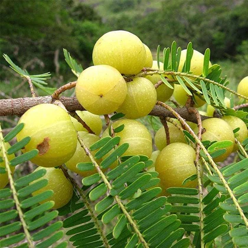

Amla Tree (Phyllanthus emblica)
Scientific Name: Phyllanthus emblica
Description: The Amla tree, also known as Indian Gooseberry, is a small to medium-sized deciduous tree native to India. It produces round, greenish-yellow fruits known for their extremely high vitamin C content and numerous health benefits. The tree has light grey bark and feathery leaves, and it thrives well in diverse climatic conditions.
Care Tips:
- Water: Requires moderate watering, avoid overwatering.
- Light: Prefers full sunlight for best fruit production.
- Temperature: Best grown between 20°C to 35°C.
- Soil: Prefers well-drained loamy or sandy soil.
Medicinal Uses:
Amla is renowned in Ayurveda for boosting immunity, improving digestion, and promoting healthier skin and hair. It is a natural antioxidant and is commonly used in health supplements, oils, and hair care products.